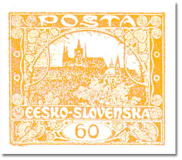
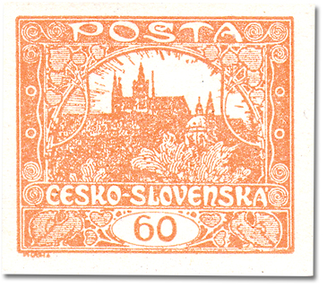
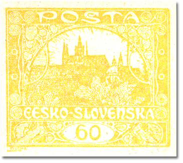
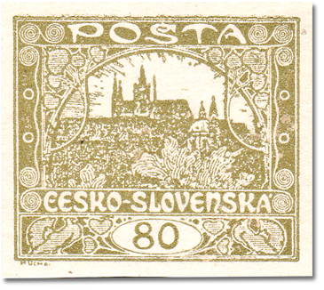
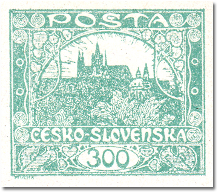
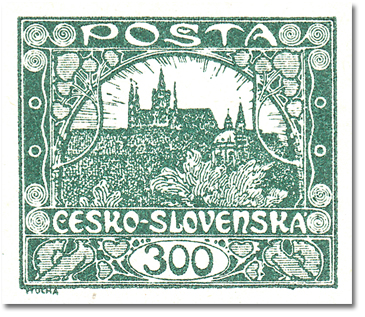
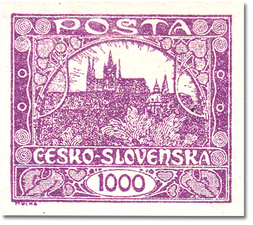
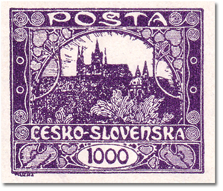

Fourth design
The fourth design of the Hradčany issue. The values printed from it are listed below, each with its shades, catalogue numbers, print run and date of issue.
60h – yellow-orange
| Shade | POFIS | MERKUR | Plates |
|---|---|---|---|
| yellow-orange | 17 | 17a | 2 |
| red-orange | 17a | 17 | 2 |
| yellow | - | 17b | 2 |
Print run: 15 630 000 (imperf. 6 720 000, officially perf. 8 910 000) · Perforation: 13¾ : 13½ comb, 11¾ comb · Date of issue: 10. 4. 1919 · Plate diagrams



80h – olive
| Shade | POFIS | MERKUR | Plates |
|---|---|---|---|
| olive | 19 | 19 | 2 |
Print run: Imperforate 12 470 000 · Perforation: – · Date of issue: 10. 4. 1919 · Plate diagrams

300h – green-grey
| Shade | POFIS | MERKUR | Plates |
|---|---|---|---|
| green-grey / grey-green | 19 | 19 | 1 |
| dark green / black-green | 19a | 19a | 1 |
Print run: Imperforate 4 540 000 · Perforation: – · Date of issue: 22. 4. 1919 · Smear at field 97 · Plate diagrams


1000h – violet
| Shade | POFIS | MERKUR | Plates |
|---|---|---|---|
| violet / red-violet | 26 | 26 | 1 |
| blue-violet | 26a | 26a | 1 |
Print run: Imperforate 447 000 · Perforation: – · Date of issue: 2. 6. 1919 · Plate diagrams

